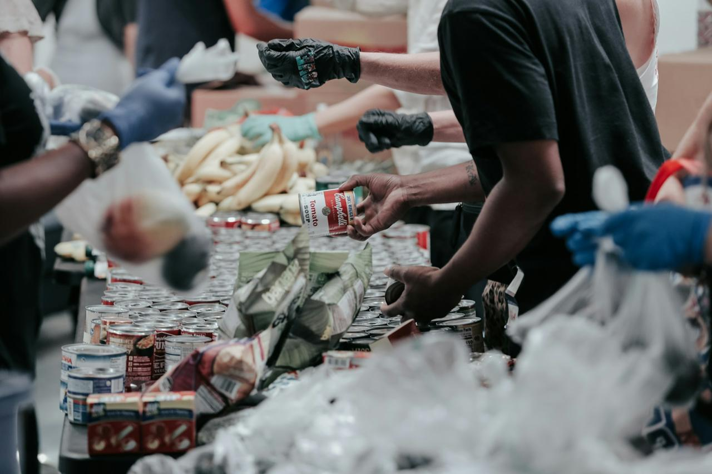

After-School Meal Programme
Every school day, our teams prepare and serve a nutritious, balanced meal to learners at each partner school immediately after classes end, ensuring children have the energy they need for homework and play.

Homework and Literacy Support
Following the meal, trained volunteer tutors run small-group homework help and literacy sessions, focused on building reading confidence and keeping learners on track with their schoolwork.
Get Involved
Want to support these programmes as a volunteer or sponsor? Submit an enquiry here.